牙 をドロップするmob一覧
一覧ページへ
| 巨人骸骨 | アンデット | 一般2 | ||||||||
|---|---|---|---|---|---|---|---|---|---|---|
 | 鈍器(380) | 牙(250) | 矢(380) | 職業鎧(210) | 指輪(190) | 能力向上1(150) | 双剣(250) | 魔弾(380) | ||
| デスナイト | アンデット | セミ1 | ||||||||
 | 鈍器(390) | 牙(260) | 弾(390) | 鎧(220) | 爪(200) | 能力向上1(160) | 双剣(260) | |||
| リビングデッド | アンデット | 一般1 | ||||||||
 | 投擲(410) | 牙(270) | イベント(410) | 腰(230) | 爪(210) | 帰還(160) | 双剣(270) | |||
| ゾンビ | アンデット | 一般3 | ||||||||
| 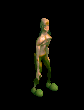 | 投擲(360) | 牙(240) | イベント(360) | 兜・帽子(200) | 爪(180) | 帰還(140) | 双剣(240) | |||
| デスピンサー | アンデット | ボス1 | ||||||||
 | 投擲(470) | 牙(310) | 状態異常回復1(470) | 鎧(260) | 爪(240) | 帰還(190) | 双剣(310) | |||
| ヴァンパイア | アンデット | 一般3 | ||||||||
| 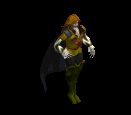 | 鞭(360) | 牙(240) | イベント(360) | 職業鎧(200) | 指輪(180) | 特殊1(140) | 双剣(240) | |||
| 古代ヴァンパイア | アンデット | セミ2 | ||||||||
 | 鞭(420) | 牙(280) | 弾(420) | 職業鎧(230) | 指輪(210) | 特殊1(170) | 双剣(280) | |||
| ノースフェラトゥ | アンデット | ボス2 | ||||||||
 | 鞭(490) | 牙(330) | HP回復(490) | 職業鎧(270) | 指輪(250) | 特殊1(200) | 双剣(330) | |||
| レッドアイ信奉者 | 人間 | 一般1 | ||||||||
 | 笛(410) | 牙(270) | イベント(410) | 鎧(230) | 槍投擲機(210) | 十字架(50) | 双剣(270) | |||
| 原人 | 人間 | 一般2 | ||||||||
 | 笛(380) | 牙(250) | イベント(380) | グローブ(210) | 槍投擲機(190) | 十字架(60) | 双剣(250) | |||
| 原始人 | 人間 | 一般3 | ||||||||
 | 笛(360) | 牙(240) | 状態異常回復1(360) | 足(200) | 槍投擲機(180) | 十字架(70) | 双剣(240) | |||
| イーター | 人間 | セミ1 | ||||||||
 | 笛(390) | 牙(260) | 状態異常回復1(390) | グローブ(220) | 槍投擲機(200) | 十字架(80) | 双剣(260) | |||
| 呪術者 | 人間 | ボス1 | ||||||||
 | 笛(470) | 牙(310) | 状態異常回復1(470) | 足(260) | 槍投擲機(240) | 十字架(90) | 双剣(310) | |||
| デビルスカラー | 人間 | 一般4 | ||||||||
 | 鞭(300) | 牙(200) | cP回復(300) | 腰(170) | イヤリング(150) | 肩刺青(130) | 双剣(200) | |||
| オーク | 人間 | 一般3 | ||||||||
 | 鈍器(360) | 牙(240) | 弾(360) | 足(200) | 冠(180) | 帰還(140) | 双剣(240) | |||
| ジャイアント | 人間 | セミ1 | ||||||||
 | 鈍器(390) | 牙(260) | HP回復(390) | 足(220) | 首(200) | 能力向上1(160) | 双剣(260) | |||
| コロッサス | 人間 | ボス1 | ||||||||
| 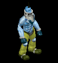 | 鈍器(470) | 牙(310) | HP回復(470) | 足(260) | 指輪(240) | 能力向上1(190) | 双剣(310) | |||
| コボルト | 悪魔 | 一般1 | ||||||||
| 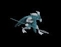 | 牙(410) | スリング(270) | 弾(410) | 腰(230) | 爪(210) | 肩刺青(120) | 双剣(410) | |||
| グレムリン | 悪魔 | 一般2 | ||||||||
 | 牙(380) | スリング(250) | 弾(380) | 腰(210) | 爪(190) | 肩刺青(130) | 双剣(380) | |||
| ゴブリン | 悪魔 | 一般3 | ||||||||
 | 牙(360) | スリング(240) | 弾(360) | 腰(200) | 爪(180) | 肩刺青(140) | 双剣(360) | |||
| ファミリア | 悪魔 | 一般4 | ||||||||
| 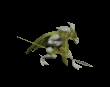 | 牙(300) | スリング(200) | 弾(300) | 腰(170) | 爪(150) | 肩刺青(150) | 双剣(300) | |||
| インプ | 悪魔 | セミ1 | ||||||||
 | 牙(390) | スリング(260) | 弾(390) | 腰(220) | 爪(200) | 肩刺青(160) | 双剣(390) | |||
| レッサーデーモン | 悪魔 | 一般2 | ||||||||
 | 鞭(380) | 牙(250) | 矢(380) | マント(210) | 指輪(190) | 十字架(190) | 双剣(250) | 魔弾(380) | ||
| デビル | 悪魔 | セミ3 | ||||||||
 | 鞭(450) | 牙(300) | 矢(450) | マント(250) | 指輪(230) | 十字架(210) | 双剣(300) | 魔弾(450) | ||
| 野良犬 | 動物 | 一般1 | ||||||||
 | 牙(410) | 笛(270) | 鍵(10) | 職業鎧(230) | 槍投擲機(210) | 特殊1(160) | 双剣(410) | |||
| ウルフ | 動物 | 一般3 | ||||||||
| 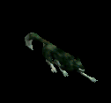 | 牙(360) | 弓(240) | 状態異常回復1(360) | マント(200) | 槍投擲機(180) | 特殊1(140) | 双剣(360) | 銃(240) | ||
| レッドアイ警備犬 | 動物 | セミ1 | ||||||||
 | 牙(390) | 鞭(260) | 鍵(30) | 職業鎧(220) | 槍投擲機(200) | 特殊1(160) | 双剣(390) | |||
| ダイアーウルフ | 動物 | セミ2 | ||||||||
 | 牙(420) | 鈍器(280) | cP回復(420) | 足(230) | 槍投擲機(210) | 特殊1(170) | 双剣(420) | |||
| ヘルハウンド | 動物 | ボス2 | ||||||||
 | 牙(490) | 両手剣(330) | 鍵(50) | 職業鎧(270) | 槍投擲機(250) | 特殊1(200) | 鎌(330) | 双剣(490) | ||
| ブラックベアー | 動物 | 一般3 | ||||||||
 | 牙(360) | 鞭(240) | 状態異常回復1(360) | グローブ(200) | 爪(180) | 宝石(140) | 双剣(360) | |||
| ブラウンベアー | 動物 | 一般4 | ||||||||
 | 牙(300) | 笛(200) | HP回復(300) | 足(170) | 爪(150) | 宝石(120) | 双剣(300) | |||
| 弓張月熊 | 動物 | ボス3 | ||||||||
 | 牙(510) | 鈍器(340) | HP回復(510) | マント(280) | 爪(260) | 宝石(200) | 双剣(510) | |||
| ファイアブロアー | 神獣 | 一般1 | ||||||||
 | 双剣(270) | スリング(100) | 牙(270) | |||||||
| ブレイジャー | 神獣 | 一般3 | ||||||||
 | 双剣(240) | スリング(100) | 牙(240) | |||||||
| 火炎悪魔 | 神獣 | ボス1 | ||||||||
 | 双剣(310) | スリング(100) | 牙(310) | |||||||
| オクトパストン | 神獣 | 一般1 | ||||||||
| 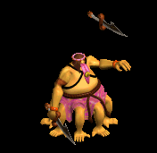 | 双剣(270) | 投擲(100) | 牙(270) | |||||||
| 凍破 | 神獣 | 一般2 | ||||||||
 | 双剣(250) | 投擲(100) | 牙(250) | |||||||
| キャストアイ | 神獣 | 一般3 | ||||||||
 | 双剣(240) | 投擲(100) | 牙(240) | |||||||
| スノーツリー | 神獣 | セミ1 | ||||||||
 | 双剣(260) | 投擲(100) | 牙(260) | |||||||
| サーリビラエ | 神獣 | ボス1 | ||||||||
 | 双剣(310) | 投擲(100) | 牙(310) | |||||||
| 巨人骸骨Ex | アンデット | 一般2 | ||||||||
| 鈍器(380) | 牙(250) | 矢(380) | 職業鎧(210) | 指輪(190) | 能力向上1(150) | 双剣(250) | 魔弾(380) | ||
| デスナイトEx | アンデット | セミ1 | ||||||||
| 鈍器(450) | 牙(300) | 弾(450) | 鎧(250) | 爪(230) | 能力向上1(180) | 双剣(300) | |||
| リビングデッドEx | アンデット | 一般1 | ||||||||
| 投擲(410) | 牙(270) | イベント(410) | 腰(230) | 爪(210) | 帰還(160) | 双剣(270) | |||
| ゾンビEx | アンデット | 一般3 | ||||||||
| 投擲(360) | 牙(240) | イベント(360) | 兜・帽子(200) | 爪(180) | 帰還(140) | 双剣(240) | ||||
| デスピンサーEx | アンデット | ボス1 | ||||||||
| 投擲(1200) | 牙(800) | 状態異常回復1(1200) | 鎧(670) | 爪(600) | 帰還(480) | 双剣(800) | |||
| ヴァンパイアEx | アンデット | 一般3 | ||||||||
| 鞭(360) | 牙(240) | イベント(360) | 職業鎧(200) | 指輪(180) | ブローチ(200) | 双剣(240) | ||||
| 古代ヴァンパイアEx | アンデット | セミ2 | ||||||||
| 鞭(650) | 牙(430) | 弾(650) | 職業鎧(360) | 指輪(330) | ブローチ(300) | 双剣(430) | |||
| ノースフェラトゥEx | アンデット | ボス2 | ||||||||
| 鞭(2000) | 牙(1330) | HP回復(2000) | 職業鎧(1110) | 指輪(1000) | ブローチ(500) | 双剣(1330) | |||
| レッドアイ信奉者Ex | 人間 | 一般1 | ||||||||
| 笛(410) | 牙(270) | イベント(410) | 鎧(230) | 槍投擲機(210) | 十字架(50) | 双剣(270) | |||
| 原人Ex | 人間 | 一般2 | ||||||||
| 笛(380) | 牙(250) | イベント(380) | グローブ(210) | 槍投擲機(190) | 十字架(60) | 双剣(250) | |||
| 原始人Ex | 人間 | 一般3 | ||||||||
| 笛(360) | 牙(240) | 状態異常回復1(360) | 足(200) | 槍投擲機(180) | 十字架(70) | 双剣(240) | |||
| イーターEx | 人間 | セミ1 | ||||||||
| 笛(450) | 牙(300) | 状態異常回復1(450) | グローブ(250) | 槍投擲機(230) | 十字架(80) | 双剣(300) | |||
| 呪術者Ex | 人間 | ボス1 | ||||||||
| 笛(1200) | 牙(800) | 状態異常回復1(1200) | 足(670) | 槍投擲機(600) | 十字架(90) | 双剣(800) | |||
| デビルスカラーEx | 人間 | 一般4 | ||||||||
| 鞭(300) | 牙(200) | cP回復(300) | 腰(170) | イヤリング(150) | 肩刺青(130) | 双剣(200) | |||
| オークEx | 人間 | 一般3 | ||||||||
| 鈍器(360) | 牙(240) | 弾(360) | 足(200) | 冠(180) | 帰還(140) | 双剣(240) | |||
| ジャイアントEx | 人間 | セミ1 | ||||||||
| 鈍器(450) | 牙(300) | HP回復(450) | 足(250) | 首(230) | 能力向上1(180) | 双剣(300) | |||
| コロッサスEx | 人間 | ボス1 | ||||||||
| 鈍器(1200) | 牙(800) | HP回復(1200) | 足(670) | 指輪(600) | 能力向上1(480) | 双剣(800) | ||||
| コボルトEx | 悪魔 | 一般1 | ||||||||
| 牙(410) | スリング(270) | 弾(410) | 腰(230) | 爪(210) | 肩刺青(120) | 双剣(410) | ||||
| グレムリンEx | 悪魔 | 一般2 | ||||||||
| 牙(380) | スリング(250) | 弾(380) | 腰(210) | 爪(190) | 肩刺青(130) | 双剣(380) | |||
| ゴブリンEx | 悪魔 | 一般3 | ||||||||
| 牙(360) | スリング(240) | 弾(360) | 腰(200) | 爪(180) | 肩刺青(140) | 双剣(360) | |||
| ファミリアEx | 悪魔 | 一般4 | ||||||||
| 牙(300) | スリング(200) | 弾(300) | 腰(170) | 爪(150) | 肩刺青(150) | 双剣(300) | ||||
| インプEx | 悪魔 | セミ1 | ||||||||
| 牙(450) | スリング(300) | 弾(450) | 腰(250) | 爪(230) | 肩刺青(160) | 双剣(450) | |||
| レッサーデーモンEx | 悪魔 | 一般2 | ||||||||
| 鞭(380) | 牙(250) | 矢(380) | マント(210) | 指輪(190) | 十字架(190) | 双剣(250) | 魔弾(380) | ||
| デビルEx | 悪魔 | セミ3 | ||||||||
| 鞭(800) | 牙(530) | 矢(800) | マント(440) | 指輪(400) | 十字架(210) | 双剣(530) | 魔弾(800) | ||
| 野良犬Ex | 動物 | 一般1 | ||||||||
| 牙(410) | 笛(270) | 鍵(20) | 職業鎧(230) | 槍投擲機(210) | 特殊1(160) | 双剣(410) | |||
| ウルフEx | 動物 | 一般3 | ||||||||
| 牙(360) | 弓(240) | 状態異常回復1(360) | マント(200) | 槍投擲機(180) | 特殊1(140) | 双剣(360) | 銃(240) | |||
| レッドアイ警備犬Ex | 動物 | セミ1 | ||||||||
| 牙(450) | 鞭(300) | 鍵(60) | 職業鎧(250) | 槍投擲機(230) | 特殊1(180) | 双剣(450) | |||
| ダイアーウルフEx | 動物 | セミ2 | ||||||||
| 牙(650) | 鈍器(430) | cP回復(650) | 足(360) | 槍投擲機(330) | 特殊1(260) | 双剣(650) | |||
| ヘルハウンドEx | 動物 | ボス2 | ||||||||
| 牙(2000) | 両手剣(1330) | 鍵(130) | 職業鎧(1110) | 槍投擲機(1000) | 特殊1(800) | 鎌(1330) | 双剣(2000) | ||
| ブラックベアーEx | 動物 | 一般3 | ||||||||
| 牙(360) | 鞭(240) | 状態異常回復1(360) | グローブ(200) | 爪(180) | 宝石(140) | 双剣(360) | |||
| ブラウンベアーEx | 動物 | 一般4 | ||||||||
| 牙(300) | 笛(200) | HP回復(300) | 足(170) | 爪(150) | 宝石(120) | 双剣(300) | |||
| 弓張月熊Ex | 動物 | ボス3 | ||||||||
| 牙(2800) | 鈍器(1870) | HP回復(2800) | マント(1560) | 爪(1400) | 宝石(1120) | 双剣(2800) | |||
| ファイアブロアーEx | 神獣 | 一般1 | ||||||||
| スリング(410) | 牙(270) | 弾(410) | グローブ(230) | 手首(210) | 能力向上2(160) | 双剣(410) | |||
| ブレイジャーEx | 神獣 | 一般3 | ||||||||
| スリング(360) | 牙(240) | 弾(360) | グローブ(200) | 手首(180) | 能力向上2(140) | 双剣(240) | |||
| 火炎悪魔Ex | 神獣 | ボス1 | ||||||||
| スリング(1200) | 牙(800) | 弾(1200) | グローブ(670) | 手首(600) | 能力向上2(480) | 双剣(800) | |||
| オクトパストンEx | 神獣 | 一般1 | ||||||||
| 投擲(410) | 牙(270) | イベント(410) | マント(230) | 首(210) | 肩刺青(170) | 双剣(270) | ||||
| 凍破Ex | 神獣 | 一般2 | ||||||||
| 投擲(380) | 牙(250) | イベント(380) | マント(210) | 首(190) | 肩刺青(180) | 双剣(250) | |||
| キャストアイEx | 神獣 | 一般3 | ||||||||
| 投擲(360) | 牙(240) | イベント(360) | マント(200) | 首(180) | 肩刺青(190) | 双剣(240) | |||
| スノーツリーEx | 神獣 | セミ1 | ||||||||
| 投擲(450) | 牙(300) | イベント(450) | マント(250) | 首(230) | 肩刺青(200) | 双剣(300) | |||
| サーリビラエEx | 神獣 | ボス1 | ||||||||
| 投擲(1200) | 牙(800) | イベント(1200) | マント(670) | 首(600) | 肩刺青(210) | 双剣(800) | |||
| 巨人骸骨Zin | アンデット | 一般2 | ||||||||
| 鈍器(1380) | 牙(920) | 矢(1380) | 職業鎧(770) | 指輪(690) | 能力向上1(550) | 双剣(920) | 魔弾(1380) | ||
| デスナイトZin | アンデット | セミ1 | ||||||||
| 鈍器(650) | 牙(430) | 弾(650) | 鎧(360) | 爪(330) | 能力向上1(260) | 双剣(430) | |||
| リビングデッドZin | アンデット | 一般1 | ||||||||
| 投擲(1210) | 牙(810) | イベント(1210) | 腰(670) | 爪(610) | 帰還(480) | 双剣(810) | |||
| ゾンビZin | アンデット | 一般3 | ||||||||
| 投擲(1560) | 牙(1040) | イベント(1560) | 兜・帽子(870) | 爪(780) | 帰還(620) | 双剣(1040) | ||||
| デスピンサーZin | アンデット | ボス1 | ||||||||
| 投擲(1000) | 牙(670) | 状態異常回復1(1000) | 鎧(560) | 爪(500) | 帰還(400) | 双剣(670) | |||
| ヴァンパイアZin | アンデット | 一般3 | ||||||||
| 鞭(1560) | 牙(1040) | イベント(1560) | 職業鎧(870) | 指輪(780) | ブローチ(200) | 双剣(1040) | ||||
| 古代ヴァンパイアZin | アンデット | セミ2 | ||||||||
| 鞭(750) | 牙(500) | 弾(750) | 職業鎧(420) | 指輪(380) | ブローチ(300) | 双剣(500) | |||
| ノースフェラトゥZin | アンデット | ボス2 | ||||||||
| 鞭(1100) | 牙(730) | HP回復(1100) | 職業鎧(610) | 指輪(550) | ブローチ(500) | 双剣(730) | |||
| レッドアイ信奉者Zin | 人間 | 一般1 | ||||||||
| 笛(1210) | 牙(810) | イベント(1210) | 鎧(670) | 槍投擲機(610) | 十字架(50) | 双剣(810) | |||
| 原人Zin | 人間 | 一般2 | ||||||||
| 笛(1380) | 牙(920) | イベント(1380) | グローブ(770) | 槍投擲機(690) | 十字架(60) | 双剣(920) | |||
| 原始人Zin | 人間 | 一般3 | ||||||||
| 笛(1560) | 牙(1040) | 状態異常回復1(1560) | 足(870) | 槍投擲機(780) | 十字架(70) | 双剣(1040) | |||
| イーターZin | 人間 | セミ1 | ||||||||
| 笛(650) | 牙(430) | 状態異常回復1(650) | グローブ(360) | 槍投擲機(330) | 十字架(80) | 双剣(430) | |||
| 呪術者Zin | 人間 | ボス1 | ||||||||
| 笛(1000) | 牙(670) | 状態異常回復1(1000) | 足(560) | 槍投擲機(500) | 十字架(90) | 双剣(670) | |||
| デビルスカラーZin | 人間 | 一般4 | ||||||||
| 鞭(1200) | 牙(800) | cP回復(1200) | 腰(670) | イヤリング(600) | 肩刺青(130) | 双剣(800) | |||
| オークZin | 人間 | 一般3 | ||||||||
| 鈍器(1560) | 牙(1040) | 弾(1560) | 足(870) | 冠(780) | 帰還(620) | 双剣(1040) | |||
| ジャイアントZin | 人間 | セミ1 | ||||||||
| 鈍器(650) | 牙(430) | HP回復(650) | 足(360) | 首(330) | 能力向上1(260) | 双剣(430) | |||
| コロッサスZin | 人間 | ボス1 | ||||||||
| 鈍器(1000) | 牙(670) | HP回復(1000) | 足(560) | 指輪(500) | 能力向上1(400) | 双剣(670) | ||||
| コボルトZin | 悪魔 | 一般1 | ||||||||
| 牙(1210) | スリング(810) | 弾(1210) | 腰(670) | 爪(610) | 肩刺青(120) | 双剣(1210) | ||||
| グレムリンZin | 悪魔 | 一般2 | ||||||||
| 牙(1380) | スリング(920) | 弾(1380) | 腰(770) | 爪(690) | 肩刺青(130) | 双剣(1380) | |||
| ゴブリンZin | 悪魔 | 一般3 | ||||||||
| 牙(1560) | スリング(1040) | 弾(1560) | 腰(870) | 爪(780) | 肩刺青(140) | 双剣(1560) | |||
| ファミリアZin | 悪魔 | 一般4 | ||||||||
| 牙(1200) | スリング(800) | 弾(1200) | 腰(670) | 爪(600) | 肩刺青(150) | 双剣(1200) | ||||
| インプZin | 悪魔 | セミ1 | ||||||||
| 牙(650) | スリング(430) | 弾(650) | 腰(360) | 爪(330) | 肩刺青(160) | 双剣(650) | |||
| レッサーデーモンZin | 悪魔 | 一般2 | ||||||||
| 鞭(1380) | 牙(920) | 矢(1380) | マント(770) | 指輪(690) | 十字架(190) | 双剣(920) | 魔弾(1380) | ||
| デビルZin | 悪魔 | セミ3 | ||||||||
| 鞭(900) | 牙(600) | 矢(900) | マント(500) | 指輪(450) | 十字架(210) | 双剣(600) | 魔弾(900) | ||
| 野良犬Zin | 動物 | 一般1 | ||||||||
| 牙(1210) | 笛(810) | 鍵(30) | 職業鎧(670) | 槍投擲機(610) | 特殊1(480) | 双剣(1210) | |||
| ウルフZin | 動物 | 一般3 | ||||||||
| 牙(1560) | 弓(1040) | 状態異常回復1(1560) | マント(870) | 槍投擲機(780) | 特殊1(620) | 双剣(1560) | 銃(1040) | |||
| レッドアイ警備犬Zin | 動物 | セミ1 | ||||||||
| 牙(650) | 鞭(430) | 鍵(50) | 職業鎧(360) | 槍投擲機(330) | 特殊1(260) | 双剣(650) | |||
| ダイアーウルフZin | 動物 | セミ2 | ||||||||
| 牙(750) | 鈍器(500) | cP回復(750) | 足(420) | 槍投擲機(380) | 特殊1(300) | 双剣(750) | |||
| ヘルハウンドZin | 動物 | ボス2 | ||||||||
| 牙(1100) | 両手剣(730) | 鍵(70) | 職業鎧(610) | 槍投擲機(550) | 特殊1(440) | 鎌(730) | 双剣(1100) | ||
| ブラックベアーZin | 動物 | 一般3 | ||||||||
| 牙(1560) | 鞭(1040) | 状態異常回復1(1560) | グローブ(870) | 爪(780) | 宝石(620) | 双剣(1560) | |||
| ブラウンベアーZin | 動物 | 一般4 | ||||||||
| 牙(1200) | 笛(800) | HP回復(1200) | 足(670) | 爪(600) | 宝石(480) | 双剣(1200) | |||
| 弓張月熊Zin | 動物 | ボス3 | ||||||||
| 牙(1200) | 鈍器(800) | HP回復(1200) | マント(670) | 爪(600) | 宝石(480) | 双剣(1200) | |||
| ファイアブロアーZin | 神獣 | 一般1 | ||||||||
| スリング(1210) | 牙(810) | 弾(1210) | グローブ(670) | 手首(610) | 能力向上2(480) | 双剣(810) | |||
| ブレイジャーZin | 神獣 | 一般3 | ||||||||
| スリング(1560) | 牙(1040) | 弾(1560) | グローブ(870) | 手首(780) | 能力向上2(620) | 双剣(1040) | |||
| 火炎悪魔Zin | 神獣 | ボス1 | ||||||||
| スリング(1000) | 牙(670) | 弾(1000) | グローブ(560) | 手首(500) | 能力向上2(400) | 双剣(670) | |||
| オクトパストンZin | 神獣 | 一般1 | ||||||||
| 投擲(1210) | 牙(810) | イベント(1210) | マント(670) | 首(610) | 肩刺青(170) | 双剣(810) | ||||
| 凍破Zin | 神獣 | 一般2 | ||||||||
| 投擲(1380) | 牙(920) | イベント(1380) | マント(770) | 首(690) | 肩刺青(180) | 双剣(920) | |||
| キャストアイZin | 神獣 | 一般3 | ||||||||
| 投擲(1560) | 牙(1040) | イベント(1560) | マント(870) | 首(780) | 肩刺青(190) | 双剣(1040) | |||
| スノーツリーZin | 神獣 | セミ1 | ||||||||
| 投擲(650) | 牙(430) | イベント(650) | マント(360) | 首(330) | 肩刺青(200) | 双剣(430) | |||
| サーリビラエZin | 神獣 | ボス1 | ||||||||
| 投擲(1000) | 牙(670) | イベント(1000) | マント(560) | 首(500) | 肩刺青(210) | 双剣(670) | |||
 | 弓(1560) | 片手剣(1040) | 矢(1560) | グローブ(900) | 手首(780) | 腕刺青(170) | クロー(1040) | 銃(1560) | 魔弾(1560) | |
| ジャイアント骸骨1 Zin | アンデット | セミ1 | ||||||||
 | 冠(50) | 鈍器(90) | 牙(160) | 職業鎧(230) | 状態異常回復1(300) | 杖(350) | 本(350) | 双剣(160) | ||
| ジャイアント骸骨2 Zin | アンデット | セミ2 | ||||||||
 | 能力向上2(80) | 職業鎧(140) | 牙(250) | 職業鎧(360) | ステッキ(470) | イベント(550) | 双剣(250) | |||
| ジャイアント骸骨4 Zin | アンデット | ボス2 | ||||||||
| 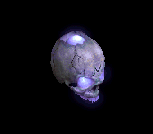 | 杖(270) | マント(450) | 牙(810) | 職業鎧(1170) | 肩刺青(1530) | 杖(1800) | 本(270) | 双剣(810) | ||
| バイキングヘッド Zin | アンデット | 一般4 | ||||||||
 | 鍵(30) | 鈍器(50) | 牙(90) | 職業鎧(130) | 状態異常回復1(170) | イベント(200) | 双剣(90) | |||
| バイキングヘッド3 Zin | アンデット | ボス2 | ||||||||
 | 能力向上2(270) | 鈍器(450) | 牙(810) | 職業鎧(1170) | ステッキ(1530) | 杖(1800) | 本(1800) | 双剣(810) | ||
| デスマスク Zin | アンデット | セミ1 | ||||||||
| 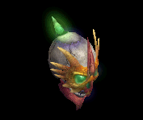 | 宝石(50) | 宝石(90) | 牙(160) | 職業鎧(230) | 肩刺青(300) | 杖(350) | 本(350) | 双剣(160) | ||
| デスマスク2 Zin | アンデット | ボス1 | ||||||||
 | 冠(150) | 鈍器(250) | 牙(450) | 職業鎧(650) | ステッキ(850) | 職業鎧(1000) | 双剣(450) | |||
| デスマスク4 Zin | アンデット | ボス3 | ||||||||
 | 冠(360) | 鈍器(600) | 牙(1080) | 職業鎧(1560) | ステッキ(2040) | 杖(2400) | 本(2400) | 双剣(1080) | ||
| ボーンキメラZin | アンデット | 一般4 | ||||||||
 | 片手剣(30) | 首(50) | 牙(90) | 職業鎧(130) | 状態異常回復1(170) | 兜・帽子(200) | クロー(30) | 双剣(90) | ||
| ボーンキメラ2 Zin | アンデット | セミ2 | ||||||||
 | 片手剣(80) | 首(140) | 牙(250) | 職業鎧(360) | 槍投擲機(470) | 兜・帽子(550) | クロー(80) | 双剣(250) | ||
| ボーンキメラ4 Zin | アンデット | ボス2 | ||||||||
 | 片手剣(270) | 状態異常回復2(450) | 牙(810) | 職業鎧(1170) | 槍投擲機(1530) | 兜・帽子(1800) | クロー(270) | 双剣(810) | ||
| ブルーエリゲイト1 Zin | アンデット | セミ2 | ||||||||
 | 宝石(80) | 首(140) | 牙(250) | 職業鎧(360) | 槍投擲機(470) | イベント(550) | 双剣(250) | |||
| ブルーエリゲイト3 Zin | アンデット | ボス2 | ||||||||
 | 職業鎧(270) | 首(450) | 牙(810) | 十字架(1170) | 状態異常回復1(1530) | 兜・帽子(1800) | 双剣(810) | |||
| 装甲ボーンキメラ Zin | アンデット | 一般4 | ||||||||
| 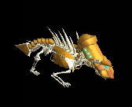 | 片手剣(30) | 首(50) | 牙(90) | 職業鎧(130) | 状態異常回復1(170) | HP回復(200) | クロー(30) | 双剣(90) | ||
| 装甲ボーンキメラ2 Zin | アンデット | セミ3 | ||||||||
 | 能力向上2(110) | 首(180) | 牙(320) | 十字架(460) | 槍投擲機(600) | 兜・帽子(700) | 双剣(320) | |||
| 装甲ボーンキメラ4 Zin | アンデット | ボス3 | ||||||||
 | 宝石(360) | 首(600) | 牙(1080) | 能力向上1(1560) | 槍投擲機(2040) | 宝石(2400) | 双剣(1080) | |||
| ならず者1 Zin | 人間 | 一般4 | ||||||||
 | 鍵(50) | 爪(150) | 牙(100) | 笛(80) | 状態異常回復1(20) | 盾(30) | 双剣(100) | |||
| ならず者2 Zin | 人間 | セミ1 | ||||||||
 | 投擲(90) | 職業鎧(260) | 牙(180) | 能力向上1(140) | 弓(40) | 盾(50) | 双剣(180) | 銃(40) | ||
| ならず者4 Zin | 人間 | ボス1 | ||||||||
 | 投擲(250) | 爪(750) | 牙(500) | 笛(400) | 弓(100) | 盾(150) | 双剣(500) | 銃(100) | ||
| 襲撃団 Zin | 人間 | 一般4 | ||||||||
 | 鍵(50) | 爪(150) | 牙(100) | 笛(80) | 弓(20) | HP回復(30) | 双剣(100) | 銃(20) | ||
| 襲撃団1 Zin | 人間 | セミ1 | ||||||||
 | 投擲(90) | 爪(260) | 牙(180) | 能力向上2(140) | 弓(40) | 盾(50) | 双剣(180) | 銃(40) | ||
| 襲撃団3 Zin | 人間 | ボス2 | ||||||||
 | 投擲(450) | 爪(1350) | 牙(900) | 鞭(720) | 両手剣(180) | イベント(270) | 鎌(180) | 双剣(900) | ||
| 格闘家 Zin | 人間 | セミ1 | ||||||||
 | 投擲(90) | 爪(260) | 牙(180) | マント(140) | 肩刺青(40) | イベント(50) | 双剣(180) | |||
| ルーンファイター Zin | 人間 | セミ3 | ||||||||
 | 両手剣(180) | 爪(530) | 牙(350) | 笛(280) | 状態異常回復1(70) | HP回復(110) | 鎌(180) | 双剣(350) | ||
| 武術マスター Zin | 人間 | ボス2 | ||||||||
 | 鍵(450) | 爪(1350) | 牙(900) | 能力向上1(720) | 弓(180) | 盾(270) | 双剣(900) | |||
| ビッグモンキー Zin | 動物 | 一般4 | ||||||||
 | 冠(70) | イヤリング(50) | 牙(40) | 十字架(30) | 肩刺青(20) | 翼(10) | 双剣(40) | 水晶(10) | ||
| ビッグモンキー2 Zin | 動物 | セミ2 | ||||||||
 | 冠(190) | イヤリング(140) | 牙(110) | 能力向上1(80) | 矢(60) | 翼(30) | 双剣(110) | 水晶(30) | 魔弾(60) | |
| ルーンモンキー Zin | 動物 | ボス1 | ||||||||
 | 杖(350) | イヤリング(250) | 牙(200) | 職業鎧(150) | 矢(100) | HP回復(50) | 本(350) | 双剣(200) | 魔弾(100) | |
| マウンテン戦士 Zin | 動物 | 一般4 | ||||||||
 | 冠(70) | イヤリング(50) | 牙(40) | 職業鎧(30) | 矢(20) | イベント(10) | 双剣(40) | 魔弾(20) | ||
| マウンテン戦士4 Zin | 動物 | ボス3 | ||||||||
| 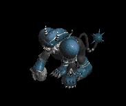 | 冠(840) | イヤリング(600) | 牙(480) | 十字架(360) | 矢(240) | HP回復(120) | 双剣(480) | 魔弾(240) | ||
| ウィングコング Zin | 動物 | セミ1 | ||||||||
 | 冠(120) | イヤリング(90) | 牙(70) | 能力向上2(50) | 肩刺青(40) | cP回復(20) | 双剣(70) | |||
| ウィングコング2 Zin | 動物 | セミ3 | ||||||||
 | 冠(250) | イヤリング(180) | 牙(140) | cP回復(110) | 肩刺青(70) | HP回復(40) | 双剣(140) | |||
| ウィングコング3 Zin | 動物 | ボス2 | ||||||||
 | 能力向上2(630) | 状態異常回復2(450) | 牙(360) | 職業鎧(270) | 矢(180) | 翼(90) | 双剣(360) | 水晶(90) | 魔弾(180) | |
| ユニコーン Zin | 神獣 | 一般4 | ||||||||
 | 冠(90) | マント(130) | 牙(70) | 槍(10) | 弓(20) | 翼(50) | 箒(10) | 双剣(70) | 水晶(50) | 銃(20) |
| ユニコーン1 Zin | 神獣 | セミ1 | ||||||||
| 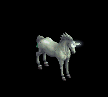 | 冠(160) | マント(230) | 牙(120) | 鎧(20) | 肩刺青(40) | HP回復(90) | 双剣(120) | |||
| ユニコーン3 Zin | 神獣 | ボス2 | ||||||||
 | 冠(810) | マント(1170) | 牙(630) | 槍(90) | cP回復(180) | イベント(450) | 箒(90) | 双剣(630) | ||
| ペガサス1 Zin | 神獣 | セミ1 | ||||||||
 | 杖(160) | ブローチ(230) | 牙(120) | 槍(20) | 弓(40) | 翼(90) | 本(160) | 箒(20) | 双剣(120) | 水晶(90) |
| ペガサス4 Zin | 神獣 | ボス3 | ||||||||
 | 冠(1080) | マント(1560) | 牙(840) | 槍(120) | 弓(240) | cP回復(600) | 箒(120) | 双剣(840) | 銃(240) | |
| ブルーウイング1 Zin | 神獣 | セミ2 | ||||||||
 | 杖(250) | 状態異常回復2(360) | 牙(190) | 槍(30) | 弓(60) | 翼(140) | 本(250) | 箒(30) | 双剣(190) | 水晶(140) |
| ブルーウイング2 Zin | 神獣 | ボス1 | ||||||||
 | 冠(450) | マント(650) | 牙(350) | 槍(50) | 弓(100) | HP回復(250) | 箒(50) | 双剣(350) | 銃(100) | |
| ブルーウイング3 Zin | 神獣 | ボス2 | ||||||||
 | 冠(810) | ブローチ(1170) | 牙(630) | 槍(90) | 弓(180) | 翼(450) | 箒(90) | 双剣(630) | 水晶(450) | 銃(180) |
| ブルーウイング4 Zin | 神獣 | ボス3 | ||||||||
 | 能力向上2(1080) | マント(1560) | 牙(840) | 十字架(120) | 弓(240) | イベント(600) | 双剣(840) | 銃(240) | ||
| ヴァンパイア | アンデット | 一般3 | ||||||||
| 鞭(360) | 牙(240) | イベント(360) | 職業鎧(200) | 指輪(180) | 特殊1(140) | 双剣(240) | ||||
| ヴァンパイア伯爵 | アンデット | セミ2 | ||||||||
| 鞭(420) | 牙(280) | 弾(420) | 職業鎧(230) | 指輪(210) | 特殊1(170) | 双剣(280) | |||
| ヴァンパイア君主 | アンデット | ボス2 | ||||||||
| 鞭(490) | 牙(330) | HP回復(490) | 職業鎧(270) | 指輪(250) | 特殊1(200) | 双剣(330) | |||
| ヴァンパイア Ex | アンデット | 一般3 | ||||||||
| 鞭(360) | 牙(240) | イベント(360) | 職業鎧(200) | 指輪(180) | ブローチ(200) | 双剣(240) | ||||
| ヴァンパイア伯爵 Ex | アンデット | セミ2 | ||||||||
| 鞭(650) | 牙(430) | 弾(650) | 職業鎧(360) | 指輪(330) | ブローチ(300) | 双剣(430) | |||
| ヴァンパイア君主 Ex | アンデット | ボス2 | ||||||||
| 鞭(2000) | 牙(1330) | HP回復(2000) | 職業鎧(1110) | 指輪(1000) | ブローチ(500) | 双剣(1330) | |||
| オクトパス | 神獣 | 一般1 | ||||||||
| 双剣(270) | 投擲(100) | 牙(270) | ||||||||
| コルダス | 神獣 | 一般2 | ||||||||
| 双剣(250) | 投擲(100) | 牙(250) | |||||||
| コールドアイ | 神獣 | 一般3 | ||||||||
| 双剣(240) | 投擲(100) | 牙(240) | |||||||
| フリーザー | 神獣 | セミ1 | ||||||||
| 双剣(260) | 投擲(100) | 牙(260) | |||||||
| クーラー | 神獣 | ボス1 | ||||||||
| 双剣(310) | 投擲(100) | 牙(310) | |||||||
| オクトパス Ex | 神獣 | 一般1 | ||||||||
| 投擲(410) | 牙(270) | イベント(410) | マント(230) | 首(210) | 肩刺青(170) | 双剣(270) | ||||
| コルダス Ex | 神獣 | 一般2 | ||||||||
| 投擲(380) | 牙(250) | イベント(380) | マント(210) | 首(190) | 肩刺青(180) | 双剣(250) | |||
| コールドアイ Ex | 神獣 | 一般3 | ||||||||
| 投擲(360) | 牙(240) | イベント(360) | マント(200) | 首(180) | 肩刺青(190) | 双剣(240) | |||
| フリーザー Ex | 神獣 | セミ1 | ||||||||
| 投擲(450) | 牙(300) | イベント(450) | マント(250) | 首(230) | 肩刺青(200) | 双剣(300) | |||
| クーラー Ex | 神獣 | ボス1 | ||||||||
| 投擲(1200) | 牙(800) | イベント(1200) | マント(670) | 首(600) | 肩刺青(210) | 双剣(800) | |||
| ボーンドラゴン Zin | アンデット | 一般4 | ||||||||
| 片手剣(30) | 首(50) | 牙(90) | 職業鎧(130) | 状態異常回復1(170) | 兜・帽子(200) | クロー(30) | 双剣(90) | ||
| ホワイトゴルゴ Zin | 動物 | 一般4 | ||||||||
| 冠(70) | イヤリング(50) | 牙(40) | 十字架(30) | 肩刺青(20) | 翼(10) | 双剣(40) | 水晶(10) | ||
| ユニコーン Zin | 神獣 | 一般4 | ||||||||
| 冠(90) | マント(130) | 牙(70) | 槍(10) | 弓(20) | 翼(50) | 箒(10) | 双剣(70) | 水晶(50) | 銃(20) |
| エルフの猟犬 Zin | 動物 | セミ1 | ||||||||
| 牙(650) | 鞭(430) | 鍵(50) | 職業鎧(360) | 槍投擲機(330) | 特殊1(260) | 双剣(650) | |||
| デビルスカラー Ex[2] | 人間 | 一般4 | ||||||||
| 鞭(300) | 牙(200) | cP回復(300) | 腰(170) | イヤリング(150) | 肩刺青(130) | 双剣(200) | |||
| ボーンドラゴン Zin | アンデット | 一般4 | ||||||||
| 片手剣(30) | 首(50) | 牙(90) | 職業鎧(130) | 状態異常回復1(170) | 兜・帽子(200) | クロー(30) | 双剣(90) | ||
| ホワイトゴルゴ Zin | 動物 | 一般4 | ||||||||
| 冠(70) | イヤリング(50) | 牙(40) | 十字架(30) | 肩刺青(20) | 翼(10) | 双剣(40) | 水晶(10) | ||
| ユニコーン Zin | 神獣 | 一般4 | ||||||||
| 冠(90) | マント(130) | 牙(70) | 槍(10) | 弓(20) | 翼(50) | 箒(10) | 双剣(70) | 水晶(50) | 銃(20) |
| ゾンビEv | アンデット | 一般3 | ||||||||
| 投擲(1560) | 牙(1040) | イベント(1560) | 兜・帽子(870) | 爪(780) | 帰還(620) | 双剣(1040) | ||||
| 巨人骸骨Ev | 人間 | 一般3 | ||||||||
| 鈍器(1560) | 牙(1040) | 弾(1560) | 足(870) | 冠(780) | 帰還(620) | 双剣(1040) | |||
| 原始人Ev | 人間 | 一般3 | ||||||||
| 笛(1560) | 牙(1040) | 状態異常回復1(1560) | 足(870) | 槍投擲機(780) | 十字架(70) | 双剣(1040) | |||
| ブラックベアーEv | 動物 | 一般3 | ||||||||
| 牙(1560) | 鞭(1040) | 状態異常回復1(1560) | グローブ(870) | 爪(780) | 宝石(620) | 双剣(1560) | |||
| ゴブリンEv | 悪魔 | 一般3 | ||||||||
| 牙(1560) | スリング(1040) | 弾(1560) | 腰(870) | 爪(780) | 肩刺青(140) | 双剣(1560) | |||
| ウルフEv | 動物 | 一般3 | ||||||||
| 牙(1560) | 弓(1040) | 状態異常回復1(1560) | マント(870) | 槍投擲機(780) | 特殊1(620) | 双剣(1560) | 銃(1040) | |||
| ヴァンパイアEv | アンデット | 一般3 | ||||||||
| 鞭(1560) | 牙(1040) | イベント(1560) | 職業鎧(870) | 指輪(780) | ブローチ(200) | 双剣(1040) | ||||
| キャストアイEv | 神獣 | 一般3 | ||||||||
| 投擲(1560) | 牙(1040) | イベント(1560) | マント(870) | 首(780) | 肩刺青(190) | 双剣(1040) | |||
| ブレイジャーEv | 神獣 | 一般3 | ||||||||
| スリング(1560) | 牙(1040) | 弾(1560) | グローブ(870) | 手首(780) | 能力向上2(620) | 双剣(1040) | |||
| ファミリアEv | 悪魔 | 一般4 | ||||||||
| 牙(1200) | スリング(800) | 弾(1200) | 腰(670) | 爪(600) | 肩刺青(150) | 双剣(1200) | ||||
| デビルスカラーEv | 人間 | 一般4 | ||||||||
| 鞭(1200) | 牙(800) | cP回復(1200) | 腰(670) | イヤリング(600) | 肩刺青(130) | 双剣(800) | |||
| ブラウンベアーEv | 動物 | 一般4 | ||||||||
| 牙(1200) | 笛(800) | HP回復(1200) | 足(670) | 爪(600) | 宝石(480) | 双剣(1200) | |||
| 古代ヴァンパイアEv | アンデット | セミ2 | ||||||||
| 鞭(750) | 牙(500) | 弾(750) | 職業鎧(420) | 指輪(380) | ブローチ(300) | 双剣(500) | |||
| デビルEv | 悪魔 | セミ3 | ||||||||
| 鞭(900) | 牙(600) | 矢(900) | マント(500) | 指輪(450) | 十字架(210) | 双剣(600) | 魔弾(900) | ||
| 火炎悪魔Ev | 神獣 | ボス1 | ||||||||
| スリング(1000) | 牙(670) | 弾(1000) | グローブ(560) | 手首(500) | 能力向上2(400) | 双剣(670) | |||
| ヘルハウンドEv | 動物 | ボス2 | ||||||||
| 牙(1100) | 両手剣(730) | 鍵(70) | 職業鎧(610) | 槍投擲機(550) | 特殊1(440) | 鎌(730) | 双剣(1100) | ||
| ヴァンパイアSp | アンデット | 一般4 | ||||||||
| 鞭(1500) | 牙(1000) | イベント(1500) | 職業鎧(900) | 指輪(800) | ブローチ(200) | 双剣(1000) | |||
| ペガサスSp | 神獣 | セミ1 | ||||||||
| 冠(1080) | マント(1500) | 牙(900) | 槍(120) | 弓(300) | cP回復(600) | 箒(120) | 双剣(900) | 銃(300) | |
| インプSp | 悪魔 | 一般4 | ||||||||
| 牙(1200) | スリング(700) | 弾(600) | 腰(400) | 爪(300) | 肩刺青(700) | 双剣(1200) | |||
| 動物 | セミ1 |